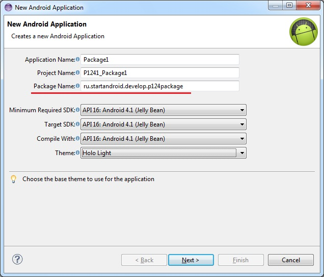
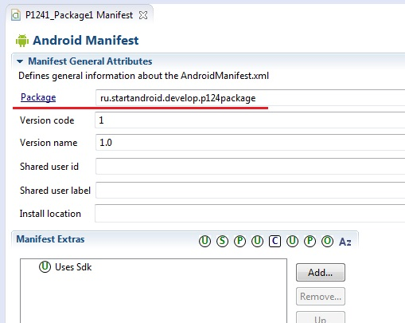
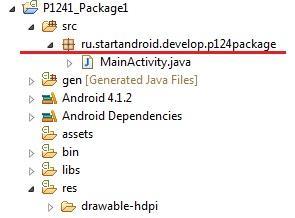
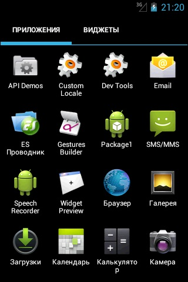
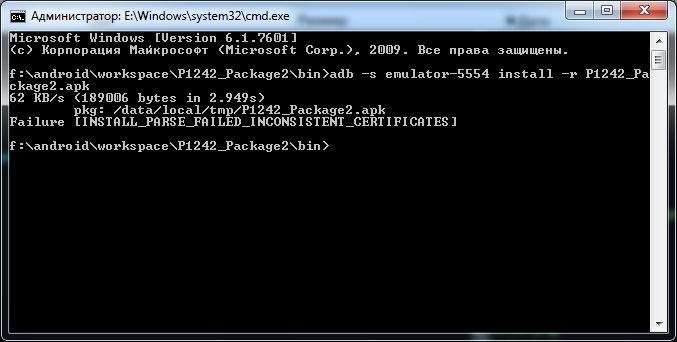
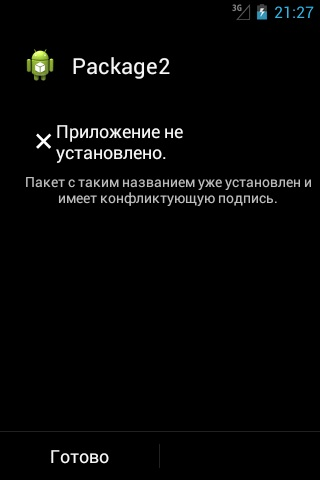

В этом уроке:
- разбираемся, что такое Package для приложения
Package можно перевести как пакет. Этот вариант перевода я и буду использовать в уроке.
Пакет приложения мы прописываем в Wizard создания приложения.

Потом его можно найти в манифесте.

Он же по дефолту становится пакетом для Java-классов

Как-то не особо значимая цель ...
Может быть он используется как-то еще? Оказывается да. Более того, пакет - это крайне важная вещь при создании приложения. Пакет является идентификатором приложения в системе. Т.е. когда вы устанавливаете приложение, система смотрит его пакет и ищет уже установленное приложение с таким пакетом. Если не нашлось, то все ок и приложение устанавливается.
А вот если нашлось, то тут в дело вступает механизм подписи приложения ключом, который мы рассмотрели на прошлом уроке. Система проверяет, если установленное и устанавливаемое приложения подписаны одним и тем же ключом, то, вероятнее всего, это означает, что оба приложения создал один автор. И устанавливаемое приложение является обновлением установленного, т.к. их пакеты и ключи одинаковы. Система устанавливает новое приложение, заменяя старое - т.е. обновляет старое.
Если же система определила, что приложения были подписаны разными ключами, то это значит, что приложения были созданы разными авторами, пакеты совпали случайно, и новое вовсе не является обновлением старого. В этом случае при установке нового, старое было бы заменено, а значит потеряно (а не обновлено), т.к. приложения абсолютно разные. И система не дает поставить новое приложение, пока не будет вручную удалено старое.
Проведем пару тестов. Я создам два приложения Package1 и Package2 с одинаковым пакетом.
Установлю первое. Оно появилось в списке.

Теперь не удаляя первое, установлю второе.
Первое исчезло. Осталось только второе.
Система решила, что второе является обновлением первого (т.к. пакеты и ключи совпадают), поэтому первое благополучно снесла и заменила вторым. Собственно, это и происходит при обычном обновлении.
Теперь подпишу Package2 другим ключом, чем оно было подписано изначально и попробую обновить через adb.

Параметр r здесь означает, что приложение надо переустановить, если оно уже существует.
Видим ошибку Failure [INSTALL_PARSE_FAILED_INCONSISTENT_CERTIFICATES]. Система сверила ключи у установленного и устанавливаемого приложений, увидела, что они разные и решила, что это будет не обновление, а просто приложение от другого разработчика ломится с тем же пакетом. И вполне разумно решила не удалять имеющееся приложение, а предупредить пользователя, что не совпадают ключи.
Если закинуть это приложение на эмулятор и поставить через файловый менеджер, получим примерно то же сообщение.

Из вышесказанного можно сделать следующий вывод: ваш ключ, которым вы подписываете приложение ни в коем случае нельзя терять или давать кому-либо.
Если вы ключ потеряете, то ваше приложение навсегда потеряет возможность быть обновленным. Даже если вы создадите новый ключ с тем же алиасом, паролем и данными владельца, это все равно будет другой ключ. И подписанная им следующая версия приложения будет рассматриваться системой не как обновление, а как попытка приложения от другого разработчика заменить ваше приложение и не даст его установить, пока не удалите установленное.
Если же вы ключ кому-то предоставите, то этот человек сможет сделать обновление для вашего приложения без вашего участия. И если этот человек имеет доступ и к вашей учетке разработчика в маркете, то он сможет залить туда свою версию вашего приложения.
Также не забывайте пароли от хранилища и от ключа. Это будет равносильно тому, что вы потеряли ключ. В общем, относитесь к вашим ключам со всей серьезностью.
Пакет имеет еще одно значение. Как вы уже наверно заметили по вкладке Devices в Eclipse, пакет используется в качестве имени процесса, в котором запускается приложение. При этом, под каждое приложение система создает пользователя. Это позволяет разграничить доступ к данным. Каждое приложение запускается и работает со своими данными в отдельном процессе под отдельным пользователем. Соответственно, другие приложения не имеют к этим данным доступа, т.к. запущены под другими пользователями.